Phone and landscape DOCX fixesse-home · 375×667 · /
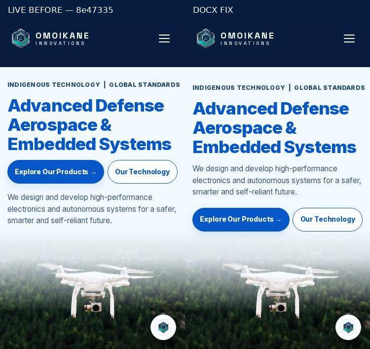
fold-home · 344×882 · /
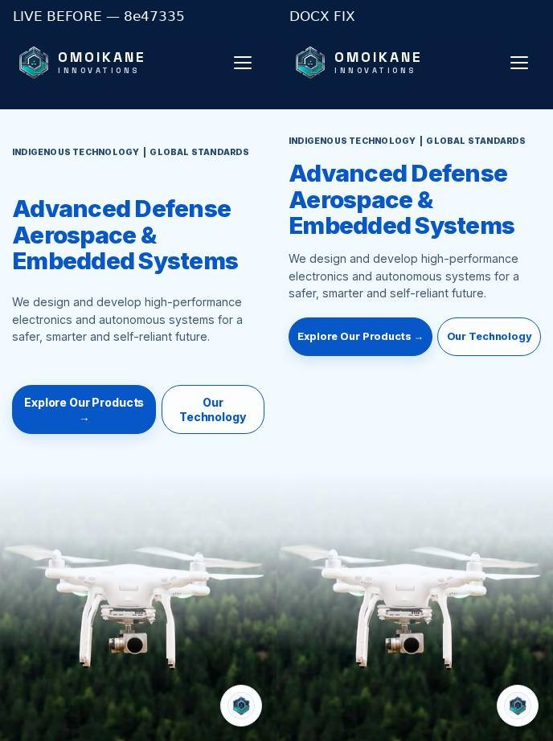
se-mission · 375×667 · /about
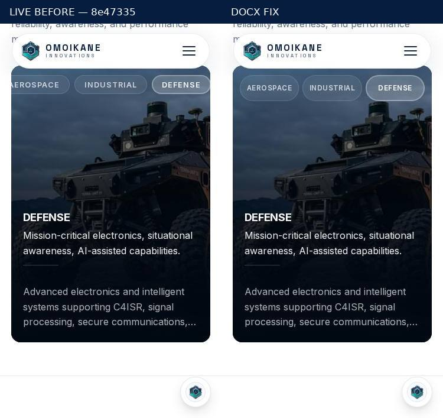
fold-contact · 344×882 · /contact
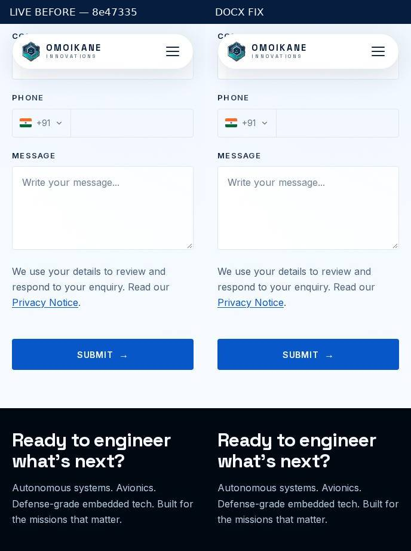
xr-about · 414×896 · /about
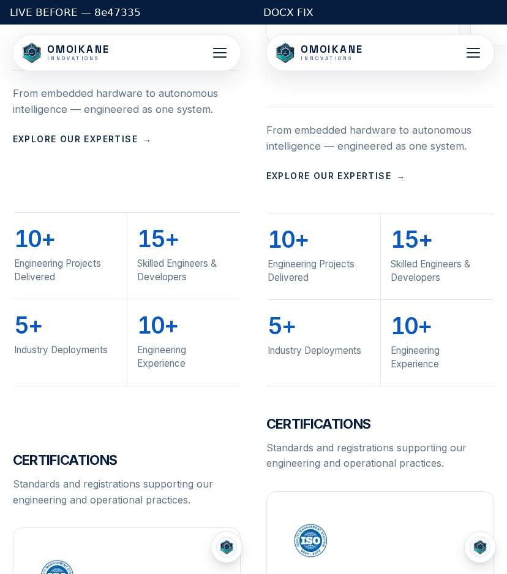
hub-about · 1280×800 · /about
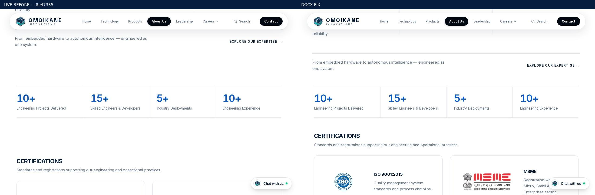
air-tech · 1180×820 · /expertise
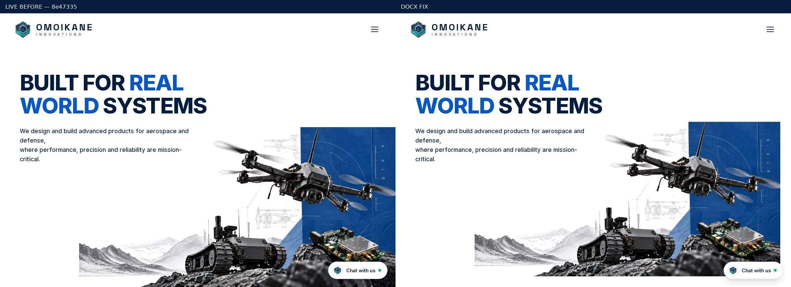
hub-apply · 1280×800 · /apply?dept=electronics&role=hardware-eng
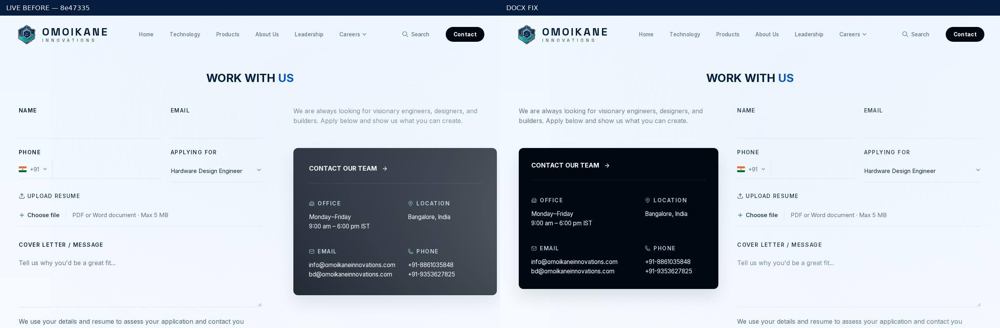
hub-tech · 1280×800 · /expertise
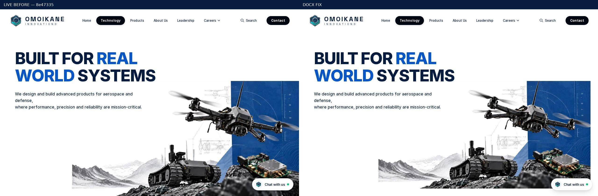
air-apply · 1180×820 · /apply?dept=software&role=web-dev
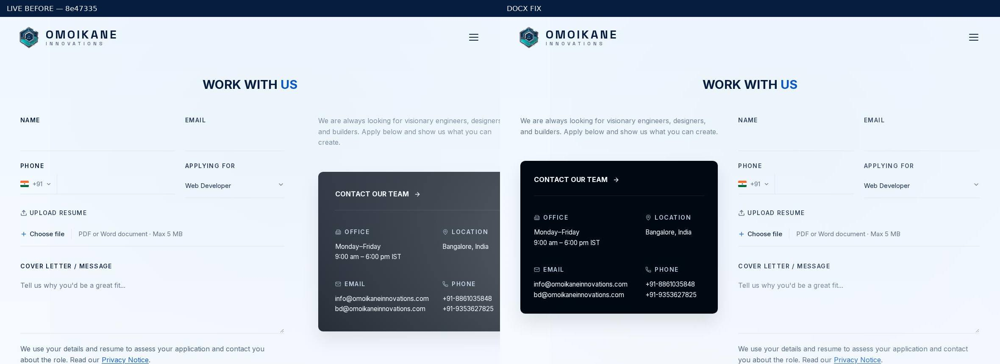
pro-apply · 1366×1024 · /apply?dept=software&role=web-dev
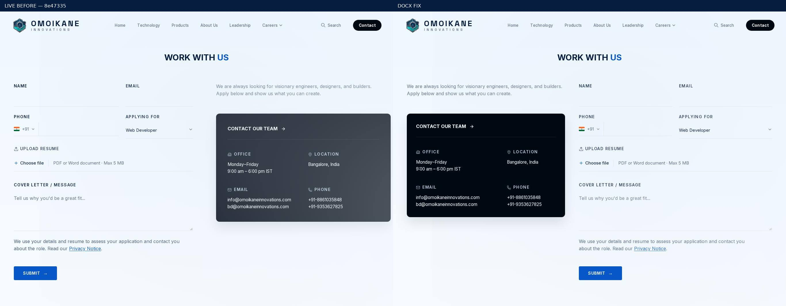
hub-search · 1280×800 · /contact
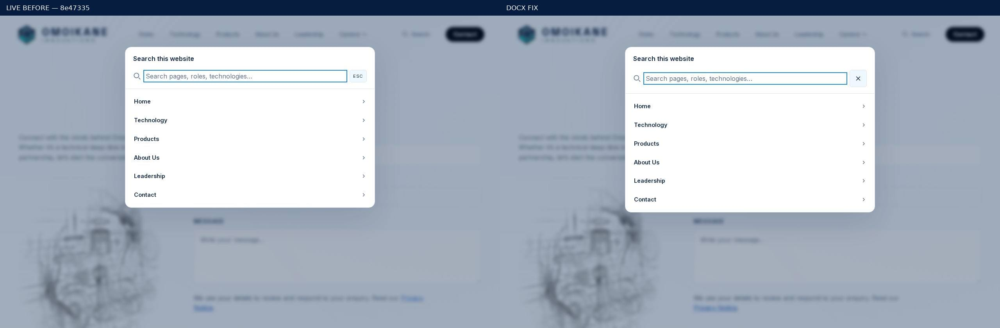
air-home · 1180×820 · /
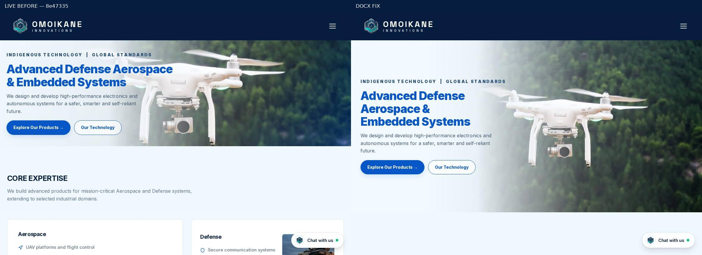
pro-home · 1366×1024 · /
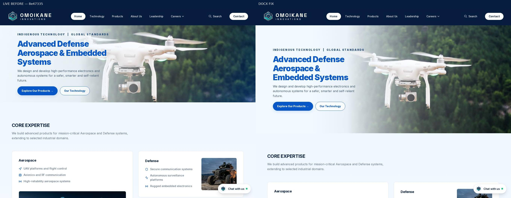
mini-home · 1024×768 · /
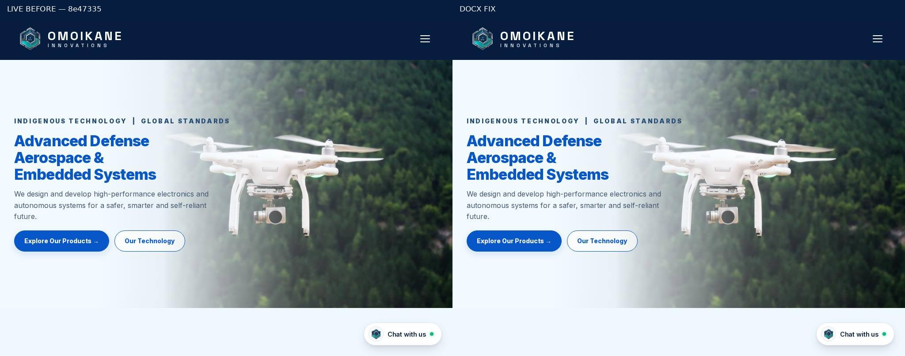